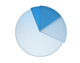
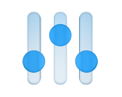

Экономический анализ и прогнозирование - Департамент экономики и инвестиций Чукотского
АО
Экономический анализ и прогнозирование
Экономический анализ и прогнозирование — это аналитический
центр, формирующий прогнозы, оценивающий риски, разрабатывающий стратегии и контролирующий
ключевые показатели развития округа.
Это не просто сбор статистики, а создание инструментов, с помощью
которых принимаются управленческие решения и выстраивается устойчивое развитие региона.
Стратегическое планирование
План на будущее:
Разработать и
актуализировать Стратегию
социально-экономического развития ЧАО до 2036 года,
включая пространственную модель развития территорий.
Обеспечить
соответствие стратегии
национальным
целям, указам Президента РФ и запросам
региона.
Включить в
стратегию реалистичные индикаторы:
ВРП, занятость,
население, уровень жизни, инвестиционная активность.
Фокус на принципы:
Ориентация на устойчивый
рост.
Учет ресурсных,
климатических и логистических
особенностей Чукотки.
Интеграции с нацпроектами
и территориальными
программами.
Экономическое прогнозирование
Мы ежегодно составляем среднесрочный прогноз
на трёхлетний период, который охватывает ключевые показатели: ВРП, занятость,
доходы населения, инвестиции. Он служит основой для формирования бюджета округа
и принятия управленческих решений. Предварительный вариант подготавливается до 5 июля,
окончательный — до 10 ноября. Прогноз позволяет заранее оценить возможные
риски и скорректировать региональные программы в соответствии с экономической
ситуацией.
Долгосрочный прогноз развития Чукотского
автономного округа действует до 2042 года и используется при
формировании стратегии и ключевых региональных программ, охватывая как
макроэкономические (ВРП, инвестиции, инфляция), так и социальные показатели —
занятость, демографию, доходы населения. Прогноз помогает выстраивать согласованную
долгосрочную политику и учитывать возможные риски и изменения в перспективе
десятилетий.
Методы и источники:
Анализ динамики региональных и муниципальных
показателей
Учёт федеральных сценариев и методик
Минэкономразвития России
Использование данных Росстата, Минфина,
ФНС и профильных ведомств
Обследуем 33 товарных рынка
для содействия развитию конкуренции
в округе, в которые включены
65 мероприятий.

Диагностика барьеров, уровня монополизации и административных ограничений;
Анализ динамики и прозрачности региональных сегментов экономики.

Продолжая пользоваться настоящим сайтом, вы выражаете согласие на обработку
ваших персональных данных с использованием сервиса аналитики Яндекс Метрика. В случае несогласия с обработкой
ваших персональных данных вы можете отключить сохранение cookies в настройках вашего браузера.
Электронная приёмная
Данная форма является официальным обращением в Департамент экономики и инвестиций
Чукотского автономного округа